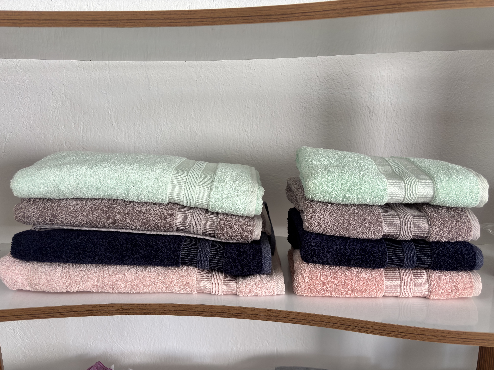
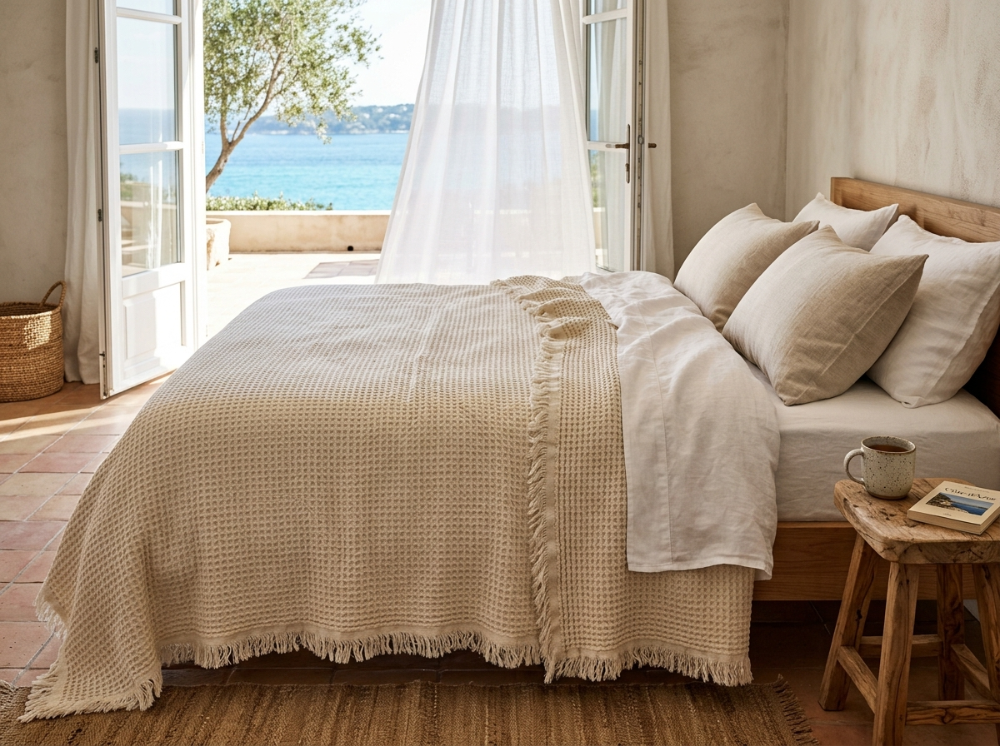

COQ D'OR
Maison de Linge — Görsel İnceleme & Karşılaştırma
Google Imagen 3 motoru ile üretilen yeni lüks ürün görsellerini ve eski ofis fotoğraflarını yan yana inceleyebilirsiniz.
1. Havlu Grubu (Önce / Sonra)
Elinizdeki mint yeşili, pudra pembe, koyu lacivert ve kum beji renk paleti ile bordür dikişleri referans alınarak yeniden çekilmiştir.

Mevcut Çekim (Amatör)
Ofis rafında, eğik açıyla ve yetersiz ışık altında çekilmiş fotoğraf. Ürünün kalitesini ve dokusunu müşteriye yansıtamıyor.

Yeni Lüks Butik Otel Çekimi
Traverten mermer tezgahta katlanmış büyük banyo ve yüz havluları. Orijinal renkleriniz korundu; yanına Provence zeytinyağlı sabunu eklendi.
2. Pike Grubu (Sıfırdan Üretim)
Klasörünüzde hiç görseli bulunmayan bu kategori için quiet luxury sahil villası yatak odası sahnesi oluşturulmuştur.

Fransız Riviera Villası — Waffle Pike Yatak Örtüsü
Akdeniz'e açılan Fransız pencereleri önünde, doğal keten ve fildişi tonlarında %100 Ege pamuğu balpeteği (waffle/gofre) dokulu, püsküllü lüks pike örtüsü.